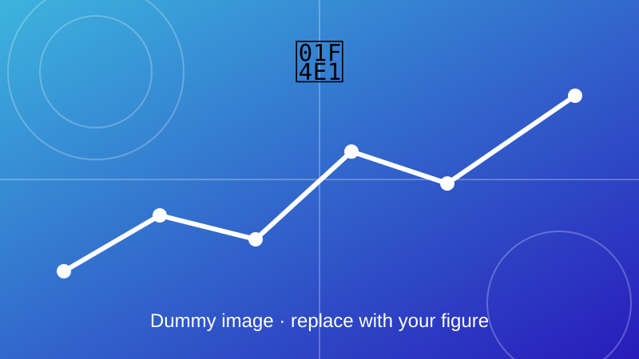

Real-Time EV Charging Data Acquisition using µPMU
An experimental platform that records synchronized charging data for digital twin development.

Overview
An experimental data acquisition platform was designed around a Siemens CPC50 DC fast charger, a TATA Nexon EV and a micro-Phasor Measurement Unit (µPMU). It collected synchronized high-resolution voltage, current, active power, reactive power and SOC data for digital twin development.
Objectives
- Capture time-synchronized electrical data during real charging sessions.
- Record voltage, current, power and SOC together.
- Provide datasets for building and checking the digital twin.
Method and key equations
The µPMU samples the supply voltage and current and reports them as phasors with time stamps. Power is computed from the phasors, and SOC is logged alongside for each session.
A sinusoid with peak \(X_m\) and phase \(\varphi\) is represented as one phasor \(\bar{X}\), the quantity a PMU reports.
Active and reactive power from RMS voltage and current and the angle \(\varphi\) between them.
Coulomb counting: SOC falls as current \(I\) leaves the battery of rated capacity \(C_n\) (the sign flips while charging).
Outcome
Add your results here: key findings, figures, and links to the related paper or code.